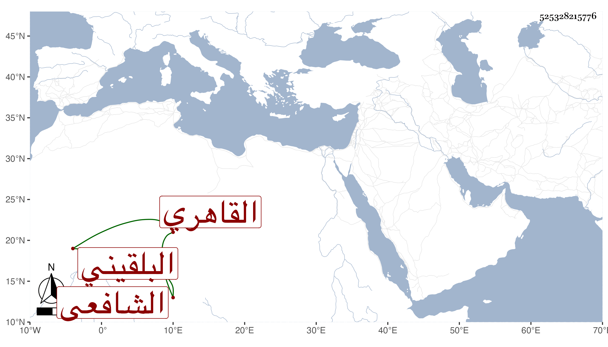

0902Sakhawi.DawLamic.ITO20230111-ara1.EIS1600.525328215776
Biography ID: 525328215776
89
عبد الباسط بن محمد بن أحمد بن محمد بن عبد الرحمن بن عمر بن رسلان الزين بن البدر بن الشهاب بن التاج بن الجلال البلقيني الأصل القاهري الشافعي . ولد في ذي القعدة سنة سبعين وثمانمائة ونشأ في كنف أبويه فحفظ القرآن والعمدة والمنهاج وجمع الجوامع وعرض على جماعة وتدرب بأبيه بل اشتغل على عم والده البدر أبي السعادات والزين زكريا القاضي والبدر حسن الأعرج وختم عليهما كتبا وكذا لازم الجلال البكري ولازمني في قراءة ألفية الحديث بحثا حتى أكملها ، وفي صحيح البخاري بل كتب شرحي على الألفية أو جله وغير ذلك ، وسمع على الشاوي وأبي السعود الغرافي وتميز وفهم ، وحج مع أبيه وجلس عنده شاهدا مع سكون وعقل وملازمة للقراء عند الكمال الطويل واهتمام بمجلس ناظر الجيش البدري بن ناظر الخاص في دروسه وغيرها ودرس بعد أبيه بالآثار وهو متوجه له مزيد وتعلق على النظم حتى أنه نظم الأسماء النبوية .
